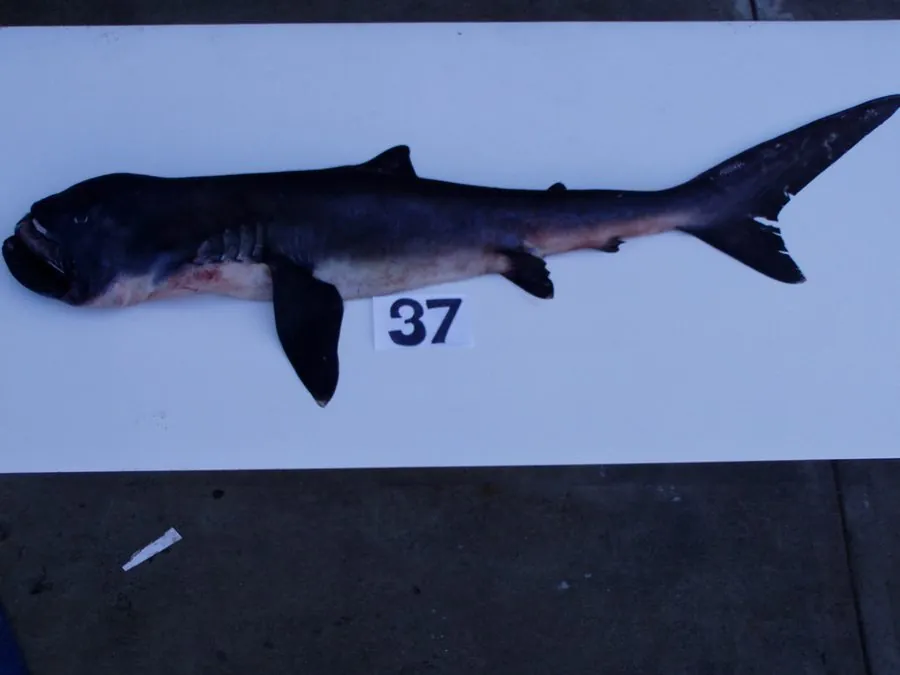

鱼类 · 动物界
巨口鲨 Megachasma pelagios

直到一九七六年才被人类发现的大型滤食鲨鱼，头宽吻钝、巨口可张开一米，靠过滤浮游生物为生，全球记录仅百余尾。
- 分类
- 门脊索动物门纲软骨鱼纲目鼠鲨目科巨口鲨科属巨口鲨属
- 栖息环境
- 外海与近岸深水层，白天在数百米深处，夜间上浮至表层
- 地理分布
- 全球热带与温带海域的零星记录，包括夏威夷、日本、菲律宾、巴西与南非
- 保护级别
- IUCN 无危（LC）；CITES 附录Ⅱ
物种志
巨口鲨是体型较大的滤食性鲨鱼，成年体长 4–5.5 米，最大记录约 7 米，体重可达 1.2 吨以上。头部宽大而圆钝，吻部短，口裂极宽，可张开约一米；口腔上壁有银白色的反光结构，可能用于吸引浮游生物。体色深褐至灰黑，腹面白色，尾鳍上叶较长，身体柔软、肌肉松弛，游泳速度缓慢。
巨口鲨于 1976 年才在夏威夷外海被首次发现，此后全球记录仅一百余尾，是已知最神秘的鲨鱼之一。它们栖息于外海与近岸的深水层，白天多在数百米深处活动，夜间上浮到表层滤食磷虾、桡足类与水母，靠张口缓游让海水通过鳃耙过滤。由于捕获个体极少，其繁殖、寿命与种群规模几乎未知。已知个体多为误入渔网或被搁浅发现，部分个体胃内检出塑料垃圾。它已被列入CITES附录Ⅱ，以加强国际贸易监管。
形态与习性
- 体长约 4–5.5 m，最大记录约 7 m
- 体重可达 1.2 吨以上
- 食性磷虾、桡足类、水母等浮游生物
- 口裂可张开约 1 m，口腔上壁有银白色反光结构
- 发现时间1976 年首次在夏威夷外海被记录
- 记录数量全球确证记录仅一百余尾
- 垂直迁移白天潜入数百米深，夜间上浮到表层滤食
趣味知识
- 巨口鲨直到 1976 年才被人类第一次发现，是最后被认识的大型鲨鱼之一。
- 它张嘴游泳时口裂能张开一米宽，像一张移动的滤网。
- 口腔上壁的银白色反光结构，可能是用来吸引浮游生物靠近的“诱饵”。